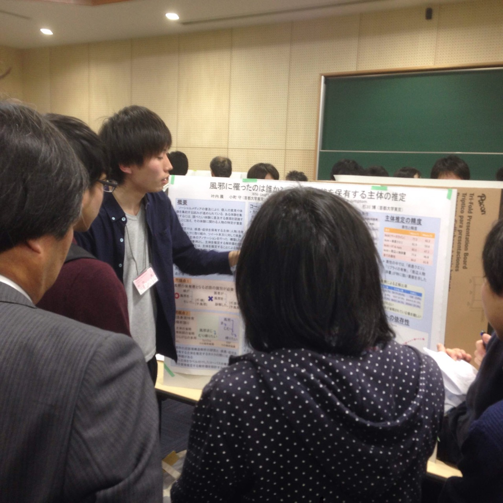
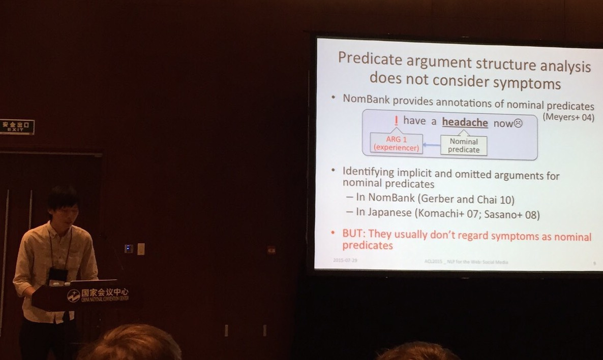
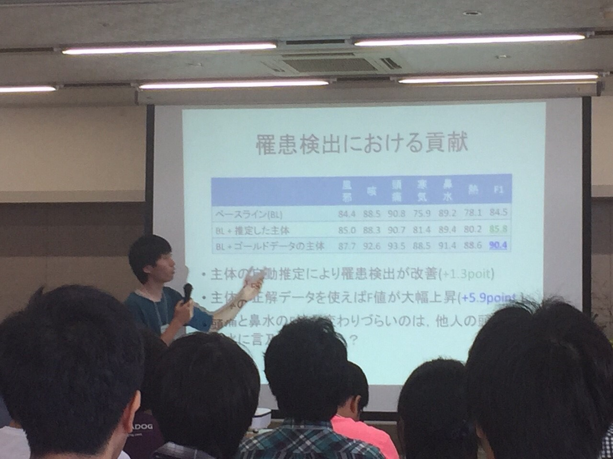
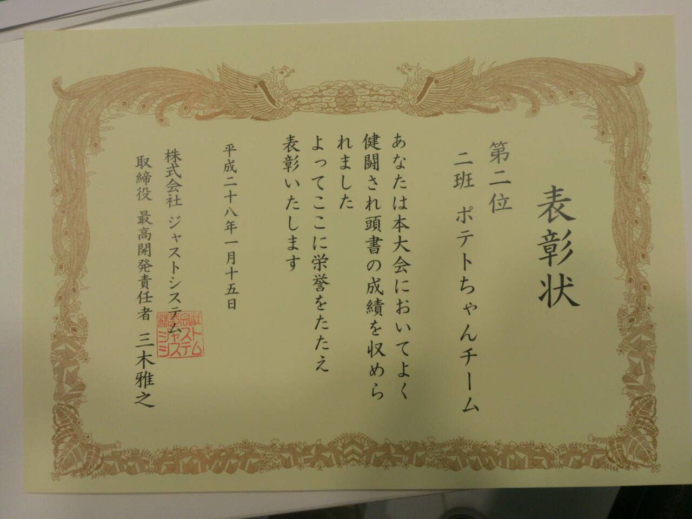
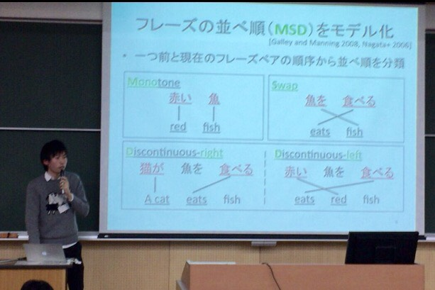
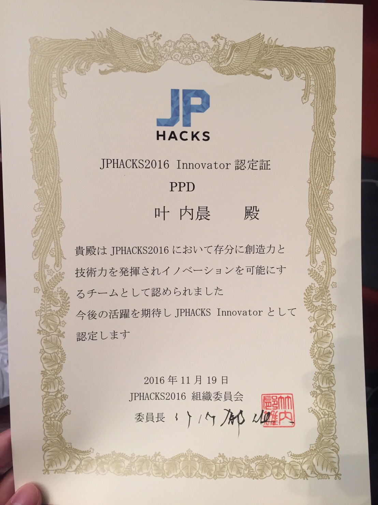
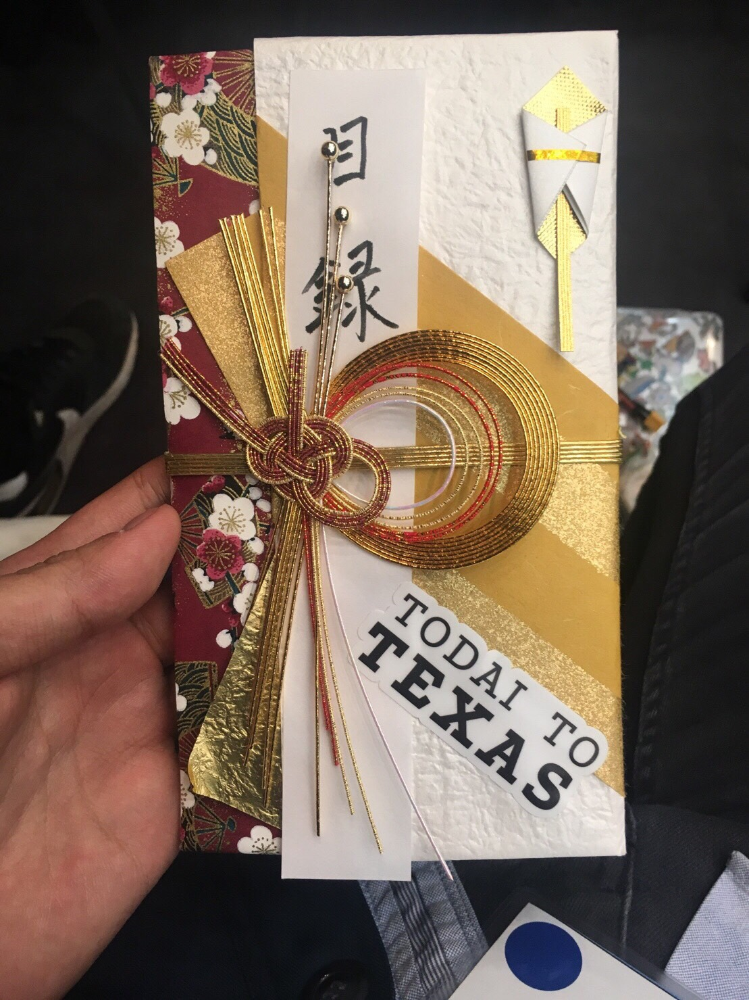
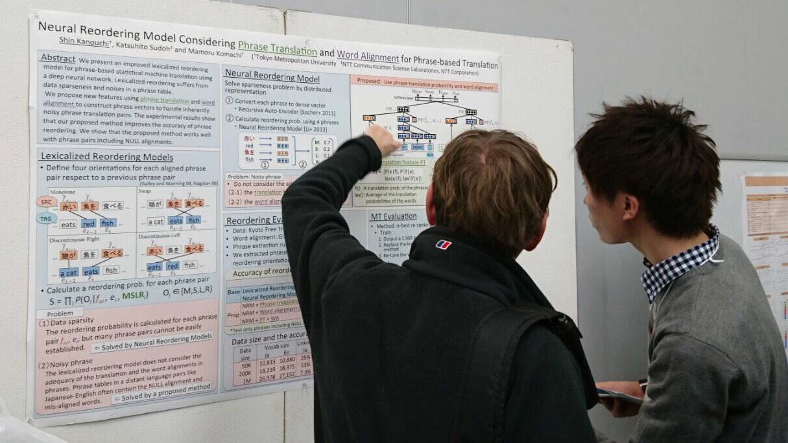
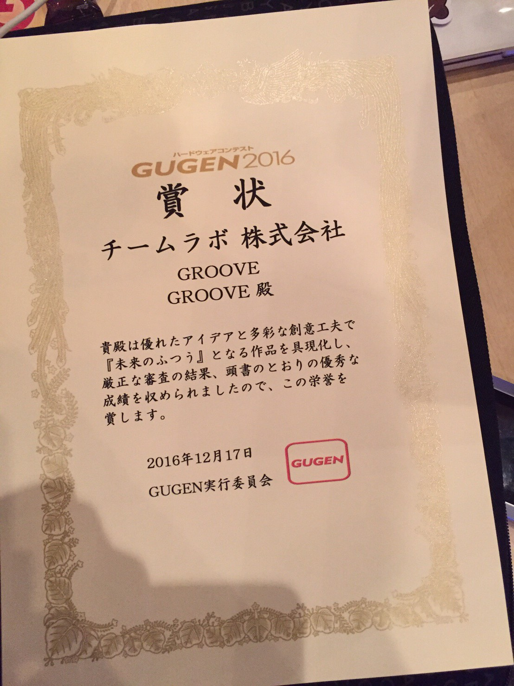

叶内 晨(Shin kanouchi)
[ Japanese | English ]
Profile
- 名前: 叶内 晨（Shin Kanouchi）
- 所属: 首都大学東京 システムデザイン研究科 情報通信システムデザイン学域 小町研究室 修士2年生
- 住所: 191–0065 東京都 日野市旭が丘6-6 研究室2-604
- 電話: 042-585-8600（日野キャンパス）
- 履歴:
- 2008.04 - 2011.03: 東京都立 国立高等学校
- 2011.04 - 2015.03: 首都大学東京システムデザイン学部情報通信システムコース
- 2013.10 - 2014.03: 小町研究室へ研究室インターンシップ
- 2014.04 -: 小町研究室へ配属
- 2015.04 -: 首都大学東京システムデザイン研究科情報通信システム学域
- プログラミング言語: Python2.7, Python3.4, java, c, objective-C, ruby(rails)
- 開発プラットホーム: Mac OS X
Research
- 自然言語処理
- 機械学習
- 深層学習
- 機械翻訳(Now)
- 対話(Now)
Internship & Part time job
-
2015.08.03 - 2015.08.28: NTTコミュニケーション科学基礎研究所へインターンシップ
-
2016.01.06 - 2016.03.31: リクルートテクノロジーズでアルバイト
-
2016.02.10 - 2016.02.26: リクルートホールディングスへインターンシップ
- Winter Internship 【Data Analystコース】に参加
-
2016.02.22 - 2016.02.26: 富士ゼロックスへインターンシップ
- Winter Internship 2016 ～技術系 研究開発コース～ に参加
Teaching Assistant
Research Assistant
-
2015.04 - 2015.09: 首都大学東京 小町研究室
-
2016.01 - : 首都大学東京 小町研究室
Activity
-
2014.09.02 -: Project Next NLPに参加
- 災害対応や医療応用などNLPの実社会への貢献を目指すNLP応用のチームに加入
-
2014.09.21 - 2014.09.23: NLP若手の会 (YANS) 第９回シンポジウムに参加
- 2014.10.11: データ構造と情報検索と言語処理勉強会 #DSIRNLP 06に参加
- LT枠でProject Next NLPのNLP応用タスクについて発表
-
2015.03.16 - 2015.03.21: 言語処理学会 第21回年次大会に参加
- 「風邪にかかったのは誰か？ — 疾患・症状を保有する主体の推定」について発表

- 2015.04.29: データ構造と情報検索と言語処理勉強会 #DSIRNLP 07に参加
-
2015.07.25 - 2015.07.31: 国際会議「the Association for Computational Linguistics」に参加
- 「Who caught a cold? - Identifying the subject of a symptom」について発表

-
2015.09.21 - 2015.09.23: NLP若手の会 (YANS) 第10回シンポジウムに参加

-
2015.12.10 : Tech-Circle 「Chainerで自然言語処理を行い、日本語を英語に翻訳しよう」に参加
- 「chainerでフレーズベース機械翻訳の並べ替えモデルを改善」についてトーク(15min)
-
2015.12.12 - 2015.12.13 : ジャストシステムの人工知能バトル（ハッカソン）に参加

-
2016.03.07 - 2016.03.11: 言語処理学会 第22回年次大会に参加
- 「フレーズベース機械翻訳における単語間の情報を考慮した深層学習による語彙化並べ替えモデル」について発表

-
2016.08.28 - 2016.08.30: NLP若手の会 (YANS) 第11回シンポジウムに参加
-
以下を発表
-
尾形 朋哉，叶内 晨，小町 守
Pointer Networksによる単語選択を利用したニューラル対話生成
-
山岸 駿秀，佐藤 貴之，叶内 晨，小町 守
ニューラル日英翻訳における態の制御
-
松村 雪桜，佐藤 貴之，叶内 晨，小町 守
文節へのアテンションを用いたニューラル日英翻訳
-
2016.11.19 : JPHACKSに参加
- GROOVEにて「Innovator 認定証」と「TODAI TO TEXAS」を受賞


-
2016.12.12 : WMT2016に参加
- 「Neural Reordering Model Considering Phrase Translation and Word Alignment for Phrase-based Translation」について発表

-
2016.12.17 : GUGEN2016に参加

-
2016.12.21 : 言語理解とコミュニケーション研究会（第3回自然言語処理シンポジウム）に参加
- 「ゲーミフィケーションを利用した効率的な対話ログ収集の試み」について発表
-
2017.03.13 : 言語処理学会 第23回年次大会に投稿
- 「ゲーミフィケーションを利用した対話ログ収集における応答文の改善と対話ログの解析」について発表
Paper
Link